Home Credit Group Prediction on Credit Payment Delay
PART 1
Introduction to the Dataset
1 - Business Context
A banking institution called Home Credit Group is struggling to identify when clients will have trouble repaying the credit they requested. Since the company is going through financial difficulties, it wants to make sure it only grants credit to clients who can pay it back, avoiding losses.
So the company sought the help of a data scientist, with the goal of having this professional both build a Machine Learning model that could predict the probability of a client running into trouble, based on the clients' own data, such as gender, number of relatives, income and assets, and analyze the data to extract interesting insights about client profiles, behavior patterns and more.
2 - Project Solution Requirements
In the conversation between the data scientist and the company, the scientist asked what the main information they wanted to obtain was. In response, the company defined a set of strategic business questions, highlighting the ones that would be essential to guide the analyses and decisions. Here are the questions:
What is the profile of the clients who apply for credit? And of those who pay late?
Can natural factors such as age signal a risk of late payment?
Is the client's type of employment an indicator of late payment? What about education level?
Can marital status and number of dependents affect the need for credit?
Do the assets reported to the bank work as collateral? Or are they a placebo?
What is the financial situation of the bank's clients? How does it change for clients who pay late?
Does it make sense to think that clients with high incomes have less difficulty?
Do clients who ask for more than they need have more difficulty paying?
Are there types of contracts with a higher rate of late payment?
Besides the questions, the company asked for a Machine Learning model trained to predict late payments, as well as a report detailing the potential financial impact of this model. It is also necessary to identify the factors that most objectively indicate that clients will pay late.
Build a Machine Learning model able to predict which clients will pay late.
Identify the main characteristics that show whether a late payment will happen.
Produce an explanation or financial report on the benefits of the new model.
It is worth noting that Home Credit Group already has a machine learning model that uses a Random Forest Classifier to make predictions. Even though this model does not have a bad AUC, at 0.71, it is practically unable to get it right when clients pay late, and that is the problem we are going to overcome.
3 - Project Methodology
In this project, I used one of the best-known methodologies for solving data problems: CRISP-DM, the Cross-Industry Standard Process for Data Mining. It is an iterative method that lets the data scientist "go back and forth" between the stages of the process, such as between Modeling and Data Preparation. This flexibility is useful, because some insights can come up at different stages, and CRISP-DM gives you the freedom to fix things at different phases of the work.
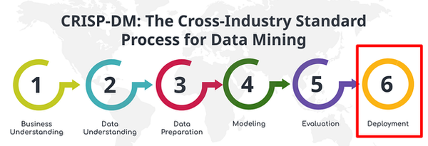
4 - Data Dictionary
The dataset provided by the company includes a wide range of information about the clients, such as location, age, marital status and employment status. It also contains information about their financial, asset, social and time-related relationships. Note that this dictionary does not list every column: with more than 120 columns, that would be excessive, so it includes the main ones used in the EDA.
SK_ID_CURR:
Unique client ID.
TARGET:
Default indicator (1 = in default).
NAME_CONTRACT_TYPE:
Type of credit contract.
CODE_GENDER:
Client's gender.
FLAG_OWN_CAR:
Client owns a car.
FLAG_OWN_REALTY:
Client owns real estate.
CNT_CHILDREN:
Number of children.
AMT_INCOME_TOTAL:
Client's total annual income.
AMT_CREDIT:
Total amount of credit granted.
AMT_ANNUITY:
Annual credit payment amount.
AMT_GOODS_PRICE:
Price of the financed goods.
NAME_TYPE_SUITE:
Who accompanied the client during the credit application.
NAME_INCOME_TYPE:
Type of income source.
NAME_EDUCATION_TYPE:
Client's education level.
NAME_FAMILY_STATUS:
Marital status.
NAME_HOUSING_TYPE:
Type of housing.
REGION_POPULATION_RELATIVE:
Population density of the region.
DAYS_BIRTH:
Age in days (negative).
DAYS_EMPLOYED:
Time employed in days (negative).
DAYS_REGISTRATION:
Days since the client's registration.
DAYS_ID_PUBLISH:
Days since the last ID document update.
OWN_CAR_AGE:
Age of the client's car (in years).
FLAG_EMP_PHONE:
Has a work phone.
FLAG_WORK_PHONE:
Has a landline.
FLAG_PHONE:
Has any landline.
FLAG_EMAIL:
Has an email address.
OCCUPATION_TYPE:
Type of occupation.
CNT_FAM_MEMBERS:
Number of family members.
REGION_RATING_CLIENT:
Rating of the region of residence.
EXT_SOURCE_1:
External source score (credit risk).
PART 2
Exploratory Data Analysis
In this section, we start extracting insights from the dataset provided by the company. We will explore ways to answer the questions asked and identify new correlations the company may not have considered. We include the code used to generate the charts, the charts themselves and the interpretations that can be drawn from them, all done in Python with Matplotlib and Seaborn.
Impact of age on credit trust: Does age bring more responsibility?
It is common sense that older people tend to be more responsible, but this needs to be checked. To do so, I wrote code that displays a histogram counting how many people of different ages pay late or on time.
In this case, common sense seems to hold. Among clients who usually pay on time, age looks evenly distributed: the above-average values, marked in black, sit in the center of the chart. In the chart of clients who pay late, however, there is a clear drop as age increases, which may indicate that older clients are more reliable credit borrowers. Next, let's look at financial factors and then see how they relate to age.
In these charts, the black line represents clients who pay on time and the gray line clients who pay late. Each circle represents a client, and circles outside the interquartile range are hollow and black. A few interesting things stand out right away: overall, clients who pay late request more credit than the others and also have more expensive goods to pay for, which makes sense. Both groups have similar goods prices within the range, but there are more late payers outside the IQR. The same can be said about the client's income, and this will become clearer in the next chart, together with age.
Comparing these lines reveals a problem. Even though income is very similar, as we saw before, clients who pay late tend to request more money (the gray line above the black one) and also tend to request these loans for more expensive goods. This problem tends to peak around age 50. Remember, though, that younger clients tend to request less money and pay late more often, as we saw at the start, so older clients tend to owe more money, but there are fewer of them.
This makes the gap between late and on-time clients evident. In this chart, gray represents the value of the goods the clients have to pay for, and black the amount of credit requested. We can see that clients with late payments request more credit than on-time clients, on average $11,379 more, which is a strong sign that one of the problems may be requesting too much credit.
In summary:
Younger clients are more likely to pay late, while older clients tend to be more punctual.
Older clients request more credit and finance more expensive goods, especially up to age 50.
Clients who pay late have incomes similar to those who pay on time, but they borrow more money and finance more expensive goods.
Clients who pay late appear more often outside the interquartile range, meaning there are more extreme cases of debt.
Young clients pay late more often but owe less; older clients pay late less often but owe more money.
Clients who pay late request, on average, $11,379 more in credit than those who pay on time, which may indicate excessive debt.
Age 50 seems to be the critical point, where credit requests and late payments become most evident.
Influence of the clients' occupational and family profile: How do these factors affect late payment?
First, let's understand who our clients are. We have already seen how the clients' age affects their decisions; now let's look at different aspects of work and education, using this horizontal bar chart:
A pattern quickly emerges: the vast majority of clients do not have higher education, and clients who do have a higher on-time payment rate. In addition, clients in higher positions also appear to be more punctual. This is visible in the "Occupation Types" chart, where senior roles such as "Core Staff" or "High Skill Tech Staff" are more typical of on-time clients. This suggests that clients from higher social strata, with higher incomes, pay late less often. Let's check that:
In this chart, each point represents a bank client. The insight is not as obvious as it may have seemed, but it is still visible that on-time clients request relatively similar amounts of credit compared to those who pay late, while including more high-income members. This indicates that income may be an important factor in predicting late payments. Next, let's briefly look at which types of products this credit has been used for.
This chart helps confirm some earlier findings: most clients really do not make large purchases. Most purchases are for electronics, and only a minority for tourism and medicine, reinforcing the idea of a low- to middle-income client base; expensive goods are rarely offered as a reason for credit. Now let's see whether anything can be drawn from the clients' family characteristics.
In this chart, we can see that there are few differences between on-time and late clients; overall, the client base follows the same pattern in all four charts. Most clients are single, live with few people at home and usually have no children. There is a small increase in the late payment rate for clients with more children, but it is a small percentage.
In summary:
Most clients do not have higher education, but those who do pay late less often.
Clients in higher positions at work tend to pay late less often.
Late and on-time clients request similar amounts of credit, and clients with higher incomes tend to pay late less often, although the difference is not very significant.
The products most often financed with credit are electronics, and they are not expensive. More expensive requests, for vehicles, medicine and tourism, are almost nonexistent or denied.
Family factors do not affect late payment, and most clients are single, with few family members.
PART 3
Predictive Modeling with Python
1 - Data Modeling
The dataset provided by the company contains some useless information, information that can be aggregated, missing information that needs to be filled in, and outliers that can hurt the model. After all these transformations, we still need to build a machine learning model that delivers good results for the company. Below is a view of the dataset provided, to make the process easier to follow.
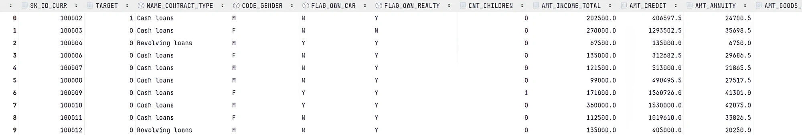
2 - Data Cleaning
In this first piece of code, I removed some columns I considered irrelevant for modeling. To reduce the dimensionality of the dataset and avoid redundancy, I combined certain columns by averaging them, reducing the total number of variables without losing significant information. Working with a leaner, optimized dataset can contribute to better performance.
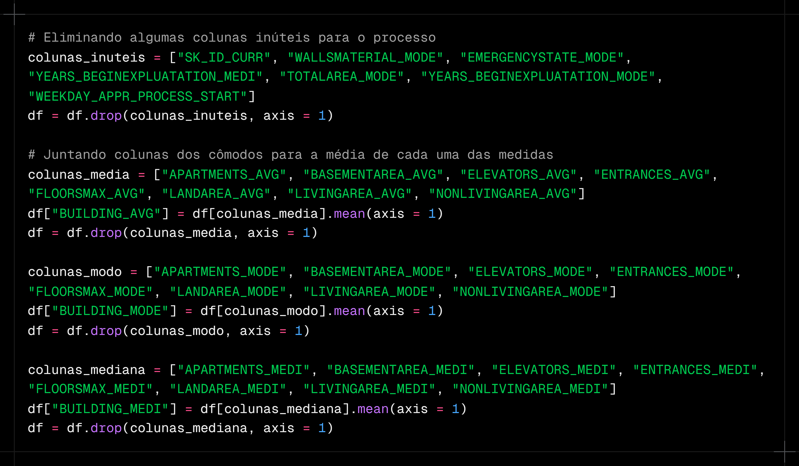
Next, I created two functions to find missing values in the dataset. One returns a Series ranking the columns with the most missing values, and the other creates two charts, one for missing values in numerical columns and another for object columns. I then dropped the columns with more than 60% of their values missing and chose to fill in the rest with different strategies, explained right below.
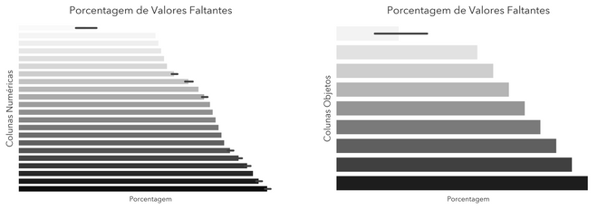
Since filling in columns with more than 60% missing values could lead to inconsistencies or a loss of data quality, I chose to remove them entirely. For the remaining columns, I used a strategic imputation approach: in numerical variables, I replaced missing values with the column mean, and in object variables I filled them with the column's most frequent string. Here is the code used in this process:
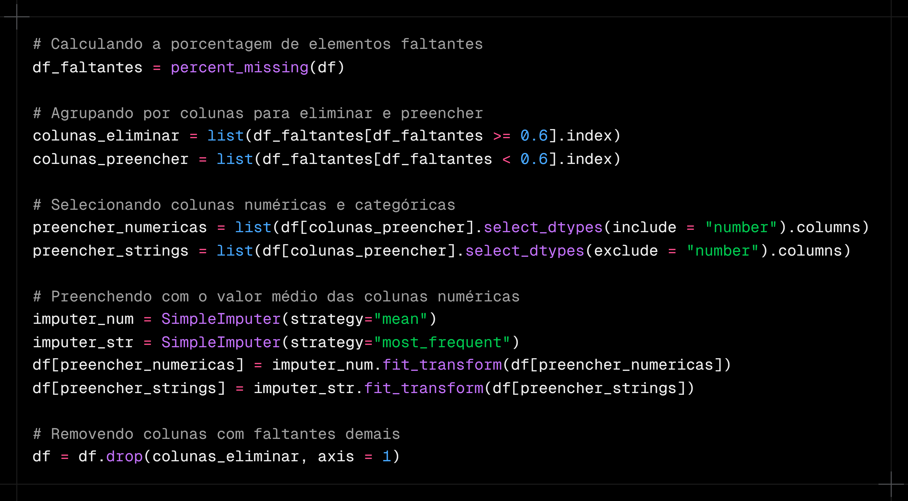
Next, I removed outliers using a filtering function applied to specific columns with potential outliers. Then I encoded the object variables, since the models only accept numbers: columns with only two string values were turned into zeros and ones, and an education level column was transformed with an OrdinalEncoder, keeping an order of importance.
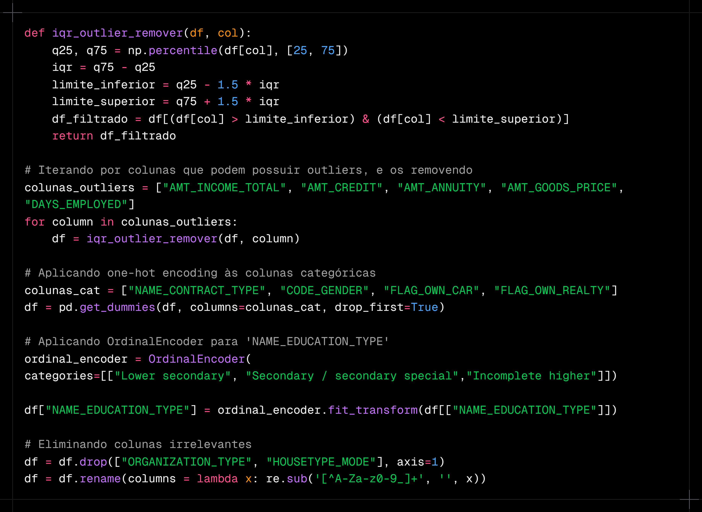
3 - Machine Learning Model
I started by preprocessing the data, selecting the variables the model would be trained on and the target it would predict. Then I applied an undersampling technique called NearMiss, since there were fewer people paying late than people paying on time; this helps balance the classes and keeps the model from misreading the information. Finally, I standardized the data with StandardScaler.
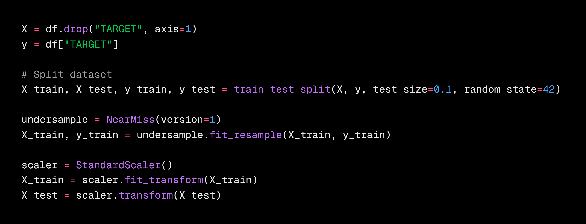
Next, I defined the LightGBM hyperparameters, using the DART method to improve regularization and avoid overfitting. I also tuned the learning rate, the number of leaves and the fraction of features used in each iteration. To handle class imbalance, I applied the scale_pos_weight parameter, giving more weight to the minority class. After that, I ran a stratified 5-fold cross-validation, keeping the class proportions in each split. During training, the model ran for up to 600 iterations, always monitoring AUC to evaluate its performance. Finally, I identified the optimal number of iterations by looking at the point where AUC reached its maximum, so the model would perform as well as possible.
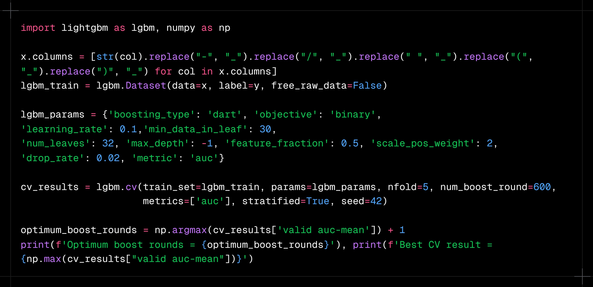
4 - Model Results
With the model trained, we need to define how we will measure its success, and we will use 3 metrics for that: precision, recall and AUC (Area Under the Curve). Since the data is imbalanced, the trade-off between precision and recall is very costly, so we focus on AUC-ROC, which measures how well the model separates the classes. An AUC of 0.5 would be exactly like a random model, so we want to get as close to 1.0 as possible. This was the metric used in the competition that created the Home Credit Group challenge, where the record is 0.80570.
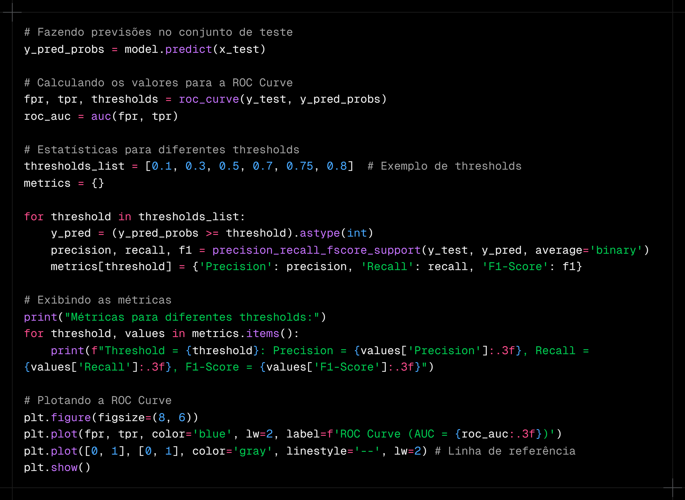
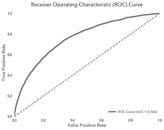
In the end, we reached an AUC of 0.764, which means our model has a 76.4% chance of ranking a client who will pay late above a client who will not. The precision and recall metrics are included in the project code, but because of the strong class imbalance, the trade-off between these two metrics was always very costly, with one value always much higher than the other.
Comparing the models, the previous one had an AUC of 0.719. But how does this affect the company's profit? Even though one number is higher than the other, what matters most is the practical impact. The image below illustrates the difference: although the old model has a slightly higher overall hit rate, our new model stands out at identifying clients who default, making it more effective at mitigating financial risk, which we calculate next:
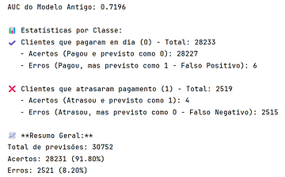
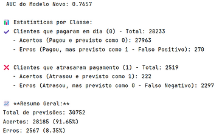
Even with a small sample of clients, our new model showed a significant improvement in predicting late payments. While the old model correctly identified only 4 clients, the new model got 222 right, an increase of 5,450% in correctly identified late payers. Although both models still need improvement, this update is already a significant step forward for the company. Considering that, on average, each defaulting client requests ¥557,778 in credit and pays 4 months late, the bank can face an average loss of up to ¥100,400.
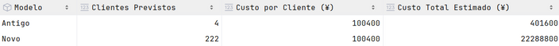
In the end, the new model predicted 218 more clients who could cause losses, a financial difference of more than ¥21.88 million in potential losses identified, and this within a scope of only 30,752 predictions. The number should only grow as new samples come in and the model improves. Thank you for reading.